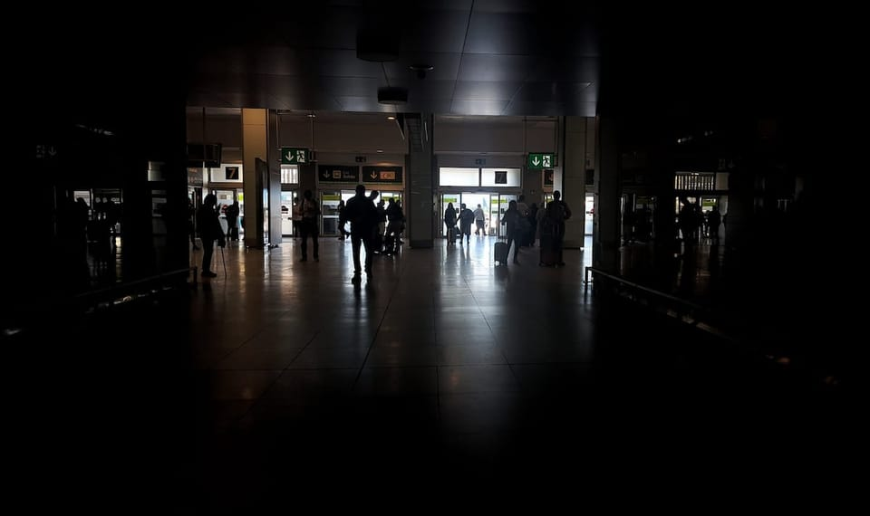

世界苦茶04月29日新闻 | 49条 | 加拿大大选自由党胜出

加拿大大选自由党胜出 | 西班牙和葡萄牙大规模停电千万人受影响 | 金砖国家组织下周一讨论对美关税问题 | 石破茂访问越南加强经贸合作 | 字节跳动因为卖GPU而发财
透明茶室
苦茶数据
美元兑人民币：7.27（昨日7.29，前日7.28）
美元兑日元：142.83（昨日143.60，前日143.96）
上证指数：3287（昨日3295，前日3295）
标普500指数：5528（昨日5525，前日5484）
比特币：94556（昨日94375，前日94416）
布伦特原油：65.35（昨日67.28，前日66.87）
中国新闻
• 中国正组建新央企“中国雅江集团”，作为雅鲁藏布江下游水电工程主体。已从包括三峡集团在内的一些企业调集来超过百人。 （翻評：這確實是個萬億人規模的大項目。）
• 幸福航空停航因资金困难 ：中国一家航空公司在五一假期前突然停航三天，一名财务工作人员向媒体透露，这是因为“公司没钱飞了”。综合现代快报和财新网报道，西安支线航空——幸福航空星期一至星期三的航班均已取消。幸福航空一名财务工作人员说，这三天的航班全部取消，是因为“公司没钱飞了，员工工资才发到去年6月”。
• 反腐将持续高压推进 ：星期天发布的中国法治蓝皮书预告，今年的反腐败行动将继续保持高压态势，并积极探索制度反腐，铲除腐败滋生的土壤和条件。据中新社报道，中国社会科学院法学研究所发布的《中国法治发展报告（2025）》指出，反腐败斗争在去年进入深水区，深化拓展金融、国企、能源、烟草、医药、体育、基建工程和招投标等重点领域反腐，加大对新型腐败和隐性腐败的甄别和查处力度，以及加大对行贿行为的惩治力度。中国在去年有2万6000人因行贿被纪检监察机关立案；3068人因行贿犯罪被检察机关起诉，同比上升18.3%。法院审结了2473件行贿犯罪案，共有2873人涉案，同比增长18.6%。
• 中方称粮食供应无忧 ：中国国家发展改革委员会副主任赵辰昕说，中国粮食供应全超国际公认安全线，即使不采购美国粮食也不影响供应。针对美国对中国加征对等关税，将对中国的粮食和能源供应保障造成多大影响的提问，赵辰昕星期一在国新办举行的新闻发布会上回应称，中国始终坚持“以我为主、立足国内、确保产能、适度进口、科技支撑”的国家粮食安全战略，不断提高粮食综合生产能力，健全粮食流通体系，加强政府储备管理，推动进口来源多元化。
• 中方吁审慎处理长和交易 ：中国外交部呼吁香港长和集团港口交易各方审慎行事，与中方有关部门充分沟通。针对《华尔街日报》引述知情人士报道，中国政府已向长江和记表示，出售巴拿马运河港口以外的港口并不成问题，中方对此有何评论的提问，中国外交部发言人郭嘉昆星期一在例行记者会上回应时表示，“我们注意到有关报道，也注意到国家市场监督管理总局表示高度关注有关交易，将依法进行审查，交易各方不得采取任何方式规避审查，未获批准前，不得实施集中，否则将承担法律责任”。郭嘉昆说，中方一贯坚决反对利用经济胁迫、霸道霸凌侵犯损害他国正当权益的行为，因此希望有关各方审慎行事，与中方有关部门充分沟通。
• 中方促印巴保持克制 ：中国外交部长王毅与巴基斯坦外长达尔通话时表示，期盼巴基斯坦与印度保持克制，推动克什米尔地区恐袭事态降温。据中国外交部官网消息，中共政治局委员、中国外交部长王毅当地时间星期天应约同巴基斯坦副总理兼外长达尔通电话。达尔介绍了巴印两国因克什米尔地区恐袭事件关系紧张最新情况，表示巴方一贯坚决打击恐怖主义，反对采取可能导致事态升级的行动。巴方致力于以成熟方式管控形势，将同中方及国际社会保持沟通。
• 中国海警控制铁线礁 ：中国官媒报道，中国海警已控制菲律宾在南中国海一个主要军事前哨附近有主权争议的小沙洲。此举正值美国与菲律宾举行大规模联合军演，可能将加剧南中国海紧张局势。中国中央电视台星期六报道，中国海警4月中登上南中国海的铁线礁，实施了海事控制。铁线礁为一组小型沙洲，四名海警警员在那里插上中国国旗宣示主权。铁线礁是南沙群岛的一部分，位于菲律宾实际控制的派格阿萨岛附近。派格阿萨岛地理位置敏感且具战略价值，菲在当地设有军事设施。
亚太印太新闻
• 赖清德强调拼经济使命 ：台湾总统赖清德说，他有三项使命，其中包括保护2300万人的饭碗，因此他率领的团队以拼经济为优先。根据台湾总统府新闻稿，赖清德星期天出席台中一中110周年校庆暨台中市台中一中校友会成立50周年联欢晚会。台湾立法院副院长江启臣、教育部次长张廖万坚，以及台中市长卢秀燕等人也出席了晚会。赖清德在致词时说，他有三项使命。第一、延续台湾的生存发展，“有主权才有国家，有台湾才有中华民国”。
• 台湾陆委会查征文违规 ：台湾陆委会接到检举，由两岸机构主办的一场征文比赛，凡报名投稿据报可获福建研学资格，违反两岸条例，台湾官员称针对此事进行查处。这个“共读一本好书”征文大赛由海峡出版发行集团、中国民主促进会福建省委员会、福建省全民阅读促进会、福建省教育学会、台湾章法学会主办，以促进两岸教师及青年学子之间的文化交流与心灵沟通为目的。根据发布在章法学会官网的征稿启事，征文对象为台湾公私立大学、中学、小学教师及在读学生，分教师组与大学组、中学组、小学组三个参赛组别，并进行评奖。
• 台民调美信任度下降 ：美国布鲁金斯学会最新发布的报告称，台湾民众对美国可靠性的认同持续下滑，仅有不到四成受访者认为美国在台海军事冲突中“可能”或“非常可能”出手干预，认为美国形象“正面”的受访者比例，大降20.8个百分点。布鲁金斯学会上个星期五刊登“特朗普效应对台湾与韩国民众对美态度的影响”调查研究。研究是基于2024年7月，以及今年2月至4月两次对台湾和韩国民众的调查，第一次调查1500人，第二次2000人。结果显示，从所有指标来看，美国都被视为不太可靠的合作伙伴。研究称，台韩民众都不太相信美国将在台、韩与中国大陆、朝鲜爆发冲突时提供帮助，且台韩皆认为特朗普对全球的民主国家有害。韩国民众整体上对美国的信任度仍高于台湾。
• 泰国成链博会主宾国 ：泰国商业部确认泰国将担任第三届中国国际供应链促进博览会主宾国。新华社报道，第三届链博会将于今年7月16日至20日在北京举办，展览总面积12万平方米，设置先进制造链、清洁能源链、智能汽车链、数码科技链、健康生活链、绿色农业链等六大链条和供应链服务展区。中国贸促会新闻发言人赵萍星期一说，距离第三届链博会开幕还有70多天，目前各项筹备工作进展顺利，中国贸促会已在境内外举办46场推介会，相关国际组织、外国政商界嘉宾和专业观众，以及广大中外企业积极踊跃报名参展参会。
• 基隆国民党部遭搜查 ：继国民党新北市党部被搜查，有三名党工被带走约谈后，台湾在野的国民党基隆市党部也传出被搜查。蓝营立委批评这是司法不公之举。综合台湾《联合报》和TVBS新闻网报道，在台湾检调星期一上午搜查国民党新北市党部后，基隆市党部也传出被调查人员上门搜查。基隆市党部人员证实，检调上午确实到场搜查，据了解与两名民进党议员郑文婷和张之亭的罢免案有关，详细情况还有待进一步了解。
• 新北党部涉案党工被带走 ：台湾两大在野党号召群众站上台北凯达格兰大道，向总统赖清德发的“反绿共，战独裁”的怒吼仅两天，国民党新北市党部星期一证实党部被搜查，有三名党工被带走约谈。综合台湾《联合报》《自由时报》等报道，新北检调追查国民党罢免民进党立委涉幽灵连署案，曾搜索国民党新北市板桥区、三重区党部。星期一上午传出，新北市党部被搜索、书记长被带走，国民党新北市党部主委黄志雄否认党部被搜索，并证实有两名党工从家里被带走约谈。新北调查局4月15日才刚搜索国民党板桥区党部、三重区党部，带走板桥区党部执行长谢庆认、书记蔡甘子，以及三重区党部执行长罗大宇与罢团志工和国民党党工等多人。相隔两周后，办案人员再度上门。
• 巴基斯坦防长称印度发动军事入侵迫在眉睫 ：巴基斯坦国防部长Muhammad Asif表示，印度发动军事入侵迫在眉睫，在上周克什米尔地区发生致命武装袭击事件导致游客死亡后，这两个拥核国家之间的紧张局势加剧。上周的武装袭击造成26人死亡，在印度激起民愤，并引发了要求对巴基斯坦采取行动的呼声。印度指责巴基斯坦支持克什米尔地区的武装分子。印巴均声称对该地区拥有主权，并曾为此爆发过两次战争。
科技新闻
• 中国核准10台新核电机组 ：中国审批核准五个核电项目，共计10台新机组，投资总额超过2000亿元人民币。中国2025年核电项目审批首次开闸。综合澎湃新闻和央视新闻报道，中国国务院总理李强星期天主持召开国务院常务会议，决定核准浙江三门三期工程等核电项目。此次获批的新项目分别是广西防城港核电三期，广东台山核电二期，浙江三门核电三期，山东海阳核电三期，福建霞浦核电一期，共计五个工程、10台新机组。
• DeepSeek应用重回韩国 ：时隔两个月，中国人工智能公司深度求索的应用恢复在韩国的下载服务。综合路透社和韩联社报道，韩国个人信息保护委员会今年2月17日称，DeepSeek应用2月15日下午6时起在韩国的服务暂停，待其根据《个人信息保护法》进行完善后再将重启服务。该应用星期一起恢复在韩国的下载服务。韩国个人信息保护委员会上星期三开会审议并通过关于DeepSeek的预备实况调查结果。调查显示，DeepSeek未经同意将用户个人信息转移至境外，也未公开相关处理方针，并将用户在聊天框中输入的提示信息擅自传输至TikTok母公司字节跳动旗下云服务平台火山引擎。
• 科技巨头抢购字节GPU ：包括腾讯、阿里巴巴在内的中国科技巨头为发展各自的人工智能平台，均向字节跳动购买此前该公司囤积的GPU晶片。中国《财经》杂志报道，今年一季度向字节跳动购买了价值约20亿元人民币以英伟达H20卡和服务器为主的算力资源。腾讯的人工智能平台元宝目前的更新主要使用来自字节跳动的卡。此外，报道也引述知情人士称，阿里巴巴也在今年一季度深度求索爆红之后，向字节跳动下了GPU订单。多位接近字节跳动人士称，字节跳动在去年囤积了大约10万个GPU模组。一位服务器厂商人士称，据其估算，这批GPU资源总价值在1000亿元左右。
• 索尼考虑剥离半导体部门 ：据知情人士透露，索尼集团正在考虑剥离其半导体部门，该公司精简业务、专注于娱乐业务的最新举措。多年来，索尼成像和传感解决方案部门的营业利润率一直在下降，从约25%降至略高于10%。相比之下，索尼的游戏和音乐部门在最近几个季度引领了利润增长。索尼半导体解决方案公司的剥离和上市最早可能在今年进行。索尼正在考虑将其在芯片业务中的大部分股份分配给股东，并可能在剥离后保留少数股权。审议仍在进行中，该计划可能会有所调整，尤其是在美国总统特朗普加征关税后市场波动的情况下。
• 马斯克称机器人将超越医生 ：马斯克表示，他预测机器人将在几年内超过优秀人类外科医生，并且在大约五年内超过最好的人类外科医生。马斯克是在回复科技评论员马里奥·纳法尔在 X 上宣传机器人手术室的帖子，他还补充说，“Neuralink不得不使用机器人来进行脑机电极插入，因为人类不可能达到所需的速度和精度。”据该公司的硬件博客和之前的公开演示，Neuralink的R1机器在大约15分钟内将64根头发丝细的线插入大脑皮层，以微米级的精度通过血管。该机器人现在是PRIME人体试验的一部分，这项试验在瘫痪患者身上测试N1无线植入物。
• IBM计划未来五年在美国投资1500亿美元： IBM 今日宣布计划在未来五年内在美国投资1500亿美元，以推动经济并加速其作为全球计算领导者的地位。这包括超过 300亿美元的研发投资，以推进和继续 IBM在美国制造大型机和量子计算机。IBM董事长、总裁兼首席执行官阿尔温德·克里希纳表示：“科技不仅在塑造未来，更在定义未来。自 114年前成立以来，IBM始终致力于支持美国的就业与制造业，这次投资和制造承诺将确保 IBM继续成为全球最先进计算和 AI 技术的核心。”
• 多邻国将用人工智能取代外包员工： 多邻国联合创始人兼 CEO 路易斯·冯·安在一封全体员工邮件中宣布，公司将“以 AI 为先”，并将“逐步停止使用外包员工来完成 AI 可以处理的工作”。冯·安表示，“以 AI 为先”意味着公司“需要重新思考我们的许多工作方式”，并且“对为人类设计的系统进行细微调整并不能让我们实现这一目标”。作为转变的一部分，公司将推出“一些建设性的限制”，包括改变与外包的合作方式，寻求在招聘和绩效评估中使用 AI ，以及“只有当团队无法实现更多工作自动化时，才会增加员工人数”。
• 实验计划遮蔽太阳，预计数周内获批准： 预计将投入高达5,000万英镑进行相关实验和分析。方法可能包括将气溶胶粒子喷洒到高层平流层，借此反射掉一小部分太阳能量，达到为地球降温的目的。有研究指出，这可能以相对低廉的成本实现全球降温。另一个正在研究的方法是使云层变得更明亮，以反射更多阳光。不过，专家警告称，这些技术可能带来意想不到的后果，包括可能导致灾难性的天气模式变化。 （翻評：感覺是某個科幻小說的開始，或者就是雪國列車的開始。）
财经新闻
• 欧盟对中升降机征重税 ：欧盟委员会星期一宣布，已对中国进口的高空作业升降机械设备征收最高达66.7%的关税，原因是调查发现，中国制造商受益于不公平补贴，并以人为压低的价格在欧盟市场销售。路透社报道，欧盟委员会指出，此次针对中国移动升降设备的额外关税将在20.6%至66.7%之间不等，旨在保护欧盟本地制造商在年产值逾10亿欧元的市场中维持竞争力。调查结果显示，中国移动升降设备制造商通过优惠融资、政府补助，以及以低于市场价格获得原材料的方式，获得不公平优势。
• 香港私宅价创八年新低 ：香港三月份的私人住宅售价指数按月下跌0.49%，延续四个月来的跌势，创逾八年来的新低位。综合香港无线新闻报道和差饷物业估价署在官网上公布的数据，香港上月份的私人住宅售价指数从2月的285.6下跌至284.2，较2021年9月的历史高位下跌近29%。这也是继2016年7月的281.7后，约八年以来的新低。此次跌幅按月跌0.49%，按年则跌7.8%。首季累计，香港私宅价下跌约1.7%。
• 近半外贸企业减少对美业务 ：在中美贸易紧张局势持续加剧的背景下，中国贸促会进行的调查显示，近50%在华外贸企业表示将减少对美业务。据央视新闻报道，中国贸促会面向全国1100余家外贸企业开展问卷调查，并在星期一的发布会上公布调研结果。调查显示，有近50%的外贸企业表示将减少对美业务，同时有75.3%的企业计划拓展新兴市场弥补对美出口减少份额。
• 日越同意促双边贸易 ：日本首相石破茂星期一访问越南，两国同意促进双边贸易，并维护全球货物自由流通的规则。路透社报道，这是石破茂上任以来首次出访越南，星期二他还将访问菲律宾，这标志着在美国高额关税引发全球不确定性不断升级的背景下，在东南亚的高层会晤益发频繁。两周前，越南刚接待了中国国家主席习近平和韩国高级部长，日本方面也与中国和韩国举行了三边会谈。
• 韩美关税谈判难产 ：韩国高级官员星期一说，首尔在6月3日总统补选前不会与华盛顿达成贸易协议，并指即便在7月初前达成协议也存在诸多挑战。路透社报道，韩国驻华盛顿代表团在上周四举行的首次正式关税会谈后表示，韩美双方同意制定一项贸易方案，争取在7月8日暂停互征关税到期前，取消美国新加征的部分关税。但政治分析人士指出，考虑到韩国目前由代总统韩悳洙执政，在重大能源项目及防务开支问题上，韩方难以在此时作出坚定承诺。
• 金砖拟联合应对美关税 ：金砖国家将于星期一在巴西举行会议，拟以统一阵线共同应对美国总统特朗普激进的贸易政策和关税威胁。法新社报道，金砖国家此次会晤正值全球经济的关键时刻，国际货币基金组织本周因特朗普强硬的新关税政策影响而大幅下调全球经济增长预期。金砖国家成员国包括本年度轮值主席国巴西、俄罗斯、印度、中国和南非等的高级外交官，星期一将在里约热内卢召开会议，这也是7月金砖国家领导人峰会的前奏。 （翻評：金磚國家是中國的真正主場了，看中國有沒有能力讓金磚國家發起一個聯合申明。）
• 关税冲击企业获稳岗支持 ：中国官方公布，对受关税影响较大的企业，提高失业保险稳岗返还比例。中国人力资源社会保障部副部长俞家栋星期一在新闻发布会上说，今年一季度就业形势保持总体稳定，全国城镇新增就业308万人，同比增加5万人，快于时序进度。城镇调查失业率一季度均值是5.3%，低于预期控制目标。高校毕业生、农民工、困难人员等重点群体就业平稳。他续称，与此同时，经济持续回升向好的基础还需要进一步巩固，外部冲击影响加大，美国轮番加征高额关税，部分外贸企业生产经营面临困难，部分劳动者就业岗位受到影响，就业压力持续上升。
• 美财长促中方主动降温 ：美国财政部长贝森特表示，美国政府各部门持续与中国保持接触，但考虑到两国贸易长期失衡，北京方面应为降温主动迈出第一步。彭博社报道，贝森特日前接受美国消费者新闻与商业频道访问时说：“我们将拭目以待局势如何发展。正如我一再强调的，我认为应由中国主动降温，因为他们对美出口额是我们对华出口额的五倍，因此这125%的关税是不可持续的。”贝森特指出，中国近日对部分商品实施关税豁免，显示北京有意缓解紧张局势。
• 特朗普关税策略制造不确定 ：美国总统特朗普肆意挥舞“关税大棒”，导致全球市场像坐过山车一样激烈波动，美国财政部长贝森特辩称，特朗普的关税政策制造了一种“战略不确定性”，让华盛顿在谈判中占上风。综合法新社和《纽约时报》报道，特朗普对大多数美国贸易伙伴征收10%的基准关税，并对中国大部分商品祭出高达145%的关税；北京则对美国商品征收125%的关税作为反击。数十个国家和地区正设法在90天的宽限期内与美国达成贸易协议，以避免美国更高额的对等关税，这个期限将在7月到期。贝森特星期天接受美国广播公司访问时说：“在博弈论中，这叫战略不确定性。你不会告诉谈判方最终结果是什么。”
• 中德协商电动车补贴案 ：中国商务部长王文涛与德国汽车工业协会主席穆勒会面时表示，希望该协会与中方相向而行，尽早解决欧盟对华电动车反补贴案。据中国商务部官网消息，王文涛星期天在北京会见穆勒，双方就中德汽车产业合作、欧盟对华电动汽车反补贴案等议题进行交流。王文涛说，中国对外开放的大门只会越开越大，利用外资的政策没有变也不会变，希望德国汽车企业把握机遇，坚定投资中国的信心。
• Temu和Shein涨价应对关税 ：中国跨境电商平台Temu和Shein已于4月25日上涨部分产品价格。在Shein平台，美容和健康类别前100名产品的平均价格涨幅为51%，其中几款商品的涨幅超过100%。家居、厨房产品以及玩具的平均涨幅超过30%，其中十件装洗碗巾涨幅高达377%。女装价格上涨了8%。Temu平台要求客户在商品的原始成本之外支付这些税款。平台推荐的前80件畅销商品中，从中国发货的14件商品，加征的关税金额超过了产品自身价值。其余66件从当地仓库发货，以保持价格总体稳定。
• 中国央行行长会见IMF总裁称：应加快份额占比调整，增加发展中国家代表性 ：中国央行行长潘功胜日前会见IMF总裁格奥尔基耶娃时强调，考虑到份额占比调整的必要性和紧迫性，基金组织应加快推动并尽快实现份额占比调整，使其反映成员国在全球经济中的相对地位，增加新兴市场和发展中国家的代表性。
• 英国与欧盟将发表“自由开放贸易”宣言，公然抗衡特朗普： 英国与欧盟将签署正式宣言，承诺坚持“自由与开放贸易”，以抗衡唐纳德·特朗普的关税政策。根据《Politico》看到的一份泄露草案，双方承诺建立一个基于“维护全球经济稳定和我们对自由开放贸易共同承诺”的“新战略伙伴关系”。此举正值基尔·斯塔默领导的英国政府正与特朗普政府就新关税问题谈判，希望争取豁免。该份日期为4月25日的英国-欧盟协议草案，是为5月19日峰会准备的多份文件之一，该峰会被视为重设脱欧后英欧关系的关键时刻。
俄乌战争
• 普京宣布胜利日临时停火 ：俄罗斯总统普京宣布，5月8日0时至11日0时停火，以庆祝二战胜利纪念日。俄认为乌克兰会参与停火，如果乌军破坏停火，俄军将充分回应。俄方重申愿意与乌克兰进行不设前提的谈判，愿意就乌克兰局势与国际伙伴进行建设性对话。
• 王毅会见俄罗斯外长：国际形势出现不少新变化，不变的是中俄相互信任和支持 ：中国外交部长王毅在里约热内卢会见俄罗斯外长拉夫罗夫时表示，最近国际形势又出现不少新变化，但不变的是中俄的相互信任和相互支持；双方要共同努力，将两国元首重要共识不断转化为各领域合作成果。王毅并阐述了中国在乌克兰危机方面劝和促谈的原则立场。双方还就加强联合国、上海合作组织、20国集团等多边框架下合作进行了战略沟通，并就伊朗核、朝鲜半岛核问题等交换了看法。
• 德国承诺，即便美国撤援，也将继续支援乌克兰： 德国国防部长强调，继续向乌克兰提供军事援助是德国联合政府协议中明确规定的。皮斯托里乌斯表示：「如果乌克兰沦陷，如果普京在这场战争中取胜，不论是占领乌克兰全境，还是部分地区，这都将对北约地区构成最大的威胁，同时也危及摩尔多瓦、乔治亚等邻国。」他指出，大家必须明白，「这不仅仅是对乌克兰的声援，更是为了我们自身的安全与欧洲的和平。」此外，皮斯托里乌斯还将美国提出的「让乌克兰以领土让步换取和平」的方案，比喻为“投降”。
其他新闻
• 以色列国家安全总局局长罗嫩·巴尔4月28日表示，因辛贝特未能就哈马斯对以色列的袭击提供预警，作为辛贝特的负责人，他应承担责任。为确保“有序任命和专业交接”，他将于6月15日辞职： 以色列总理办公室3月21日凌晨发表声明说，以政府一致批准总理内塔尼亚胡关于解除巴尔职务的提议。最高法院随后冻结以政府解除巴尔职务的决定。辛贝特正在调查内塔尼亚胡助手涉嫌与卡塔尔之间的非法联系，批评人士认为，政府将巴尔解职意在破坏调查。该说法被内塔尼亚胡否认。 （翻評：以色列正在變成一個獨裁國家。）
• 苏丹民兵屠杀30余平民 ：苏丹快速支援部队4月27日在恩图曼市南部萨勒哈地区杀害了30多名平民。苏丹地方组织“萨勒哈中心抵抗委员会”说，快速支援部队绑架并杀害超过30名手无寸铁的平民。苏丹民间机构“苏丹医生网”也证实此事，并表示该行为构成战争罪和反人类罪。网传视频显示，身穿快速支援部队制服的士兵向坐在地上的人开枪。快速支援部队尚未就此次袭击事件作出回应。
• 特朗普鼓动吞并加拿大 ：加拿大星期一举行第45届联邦众议院选举，同日，美国总统特朗普再次提出“吞并”加拿大的言论，鼓动加拿大成为美国的“第51个州”。特朗普星期一上午在社交媒体上发文，呼吁加拿大选民选出“一个有力量和智慧的人”，并称只要加拿大成为美国“珍爱的第51个州”，便可将税率减半，军力“免费提升至世界巅峰”，且汽车、钢铁、铝、木材、能源等产业规模将翻两番，同时实现零关税。特朗普写道：“别再受制于多年前人为划定的边界。看看这片土地若合为一体该有多美！完全自由的往来，再无边界阻隔。有百利而无一弊。本该如此！”他还称，美国不能再像过去那样每年向加拿大提供数千亿美元的补贴，除非加拿大成为美国的一个州，否则补贴“毫无意义”。
• 西班牙大停电后局部恢复 ：西班牙电网运营商星期一（说，大规模停电导致伊比利亚半岛数百万民众受影响后，西班牙北部、南部和西部部分地区已恢复供电。法新社报道，国家电网公司Red Electrica在声明中指出：“目前，半岛北部、南部及西部若干地区的变电站已恢复电压，正在逐步恢复这些地区的供电。”
• 特朗普称民调是假新闻 ：美国总统特朗普抨击显示他支持率低迷的民调是“假的”，呼吁对这一民调展开调查。法新社报道，特朗普星期一在社交媒体发文称：“知名民调专家、行业内最受尊敬的人之一约翰·麦克劳克林刚刚指出，《纽约时报》的失败民调以及ABC/《华盛顿邮报》的民调……都是假新闻机构发布的‘假民调’。”麦克劳克林是特朗普的亲密盟友，也是一名长期发布有利于特朗普民调结果的共和党调查员。
• 美夜店突袭逮捕百名移民 ：美国当局在科罗拉多州一间夜店突击行动中，逮捕了逾百名无证移民；这是美国总统特朗普加强移民打击行动下最新一波拘捕行动。法新社报道，美国缉毒局星期天在社交媒体平台X发文称：“在一家恐怖分子频繁出入的地下夜店内，缉毒局逮捕了超过100名非法移民。”缉毒局公开的视频画面显示，武装执法人员破窗而入，并高声命令夜店顾客举手投降，顾客们纷纷跑出大楼，进入看似为购物中心停车场的区域。
• 温哥华撞人案肇事者被控 ：加拿大温哥华警方星期天对星期六晚上驾车撞死11人的肇事者提出谋杀指控。新华社报道，根据在线法庭文件，这名30岁男子目前被指控犯有八项二级谋杀罪。警方说将在未来几天提出更多指控。警方此前召开记者会说，已确认11人在此次事件中遇难，死者年龄介于五岁至65岁。另有数十人受伤，一些人伤势严重，死亡人数可能还会上升。
• 美警告打击生育旅游签证 ：美国驻中国使领馆星期五发文警告，美国将拒签以生育旅游为主要目的的签证申请，通过生育旅游滥用美国移民制度的人士也将失去今后申请签证的资格。使领馆在社交平台X转发美国国务院领事事务局的英语贴文，并以中文写道：“一些外国父母申请美国旅游签证的主要目的是把孩子生在美国，让孩子获得美国公民身份，这是不可接受的，结果最终可能要由美国纳税人来为这些医疗费用买单。这就是所谓的‘生育旅游’。”使领馆续称，美国领事官员会根据美国移民法拒绝所有此类签证申请，并说：“那些通过‘生育旅游’滥用我们移民制度的人可能会失去今后申请美国签证或前往美国的资格。这是美国国务院服务和保护美国纳税人和社区的又一种方法。”
• 特朗普百日支持率创新低 ：美国总统特朗普第二个任期执政将满100天。最新民意调查结果显示，特朗普的执政百日支持率为39%。这一数字比今年2月份下降了六个百分点，而且创下近80年来美国历任总统的最低执政百日支持率。根据星期天公布的这项民调数据，72%的美国人认为特朗普的经济政策很有可能在短期内导致美国经济衰退，53%的人认为美国的经济状况自特朗普1月上任以来变得更糟，41%的人认为自己的财务状况自特朗普上任以来发生恶化。在政治层面，65%的人表示，特朗普政府正试图逃避遵守联邦法院的命令，64%的人认为特朗普在扩大总统权力方面的行为过于激进，62%的人认为特朗普政府不尊重法治。
• 西班牙和葡萄牙大规模停电后电力正在恢复： 在周一大规模停电导致马德里、里斯本等多地瘫痪后，西班牙和葡萄牙的电力供应已陆续恢复。数百万人陷入混乱，铁路停驶、航班停飞、网络和手机信号中断、交通灯和ATM瘫痪，部分医院例行手术也被迫暂停。西班牙内政部宣布进入全国紧急状态，两国政府召开紧急内阁会议，试图查明这场从当地时间中午12点半开始的大停电原因。
• 卡尼领导自由党击败保守党，将组建少数政府： 马克·卡尼在一场围绕负担能力、关税以及特朗普吞并威胁等议题展开的选举中，领导自由党险胜。CTV新闻宣布，自由党已在第45届联邦大选中赢得足够席位，可组建少数政府。 截至美东时间晚11点30分，自由党在343个选区中赢得或领先159席。皮埃尔·波利耶夫领导的保守党将继续处于反对党地位，目前取得148席。组建多数政府需要172席。 波利耶夫成为连续第四位败给自由党的保守党领袖，自2015年以来自由党持续执政。作为加拿大前央行行长的卡尼于今年3月接替日益不得人心的贾斯汀·特鲁多成为总理。卡尼以其引领多个主要经济体度过危机的经验，成功说服加拿大人，相信他是应对负担能力问题、对抗特朗普关税与吞并威胁的最佳人选。 卡尼的胜利巩固了自由党自2015年以来持续掌权的地位——当年特鲁多意外击败史蒂芬·哈珀领导的保守党，赢得多数政府。